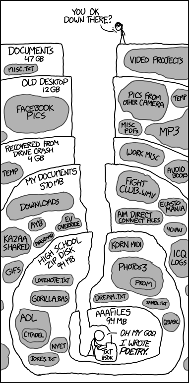
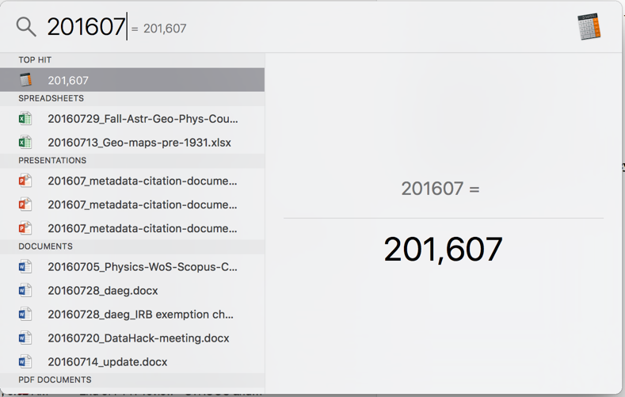
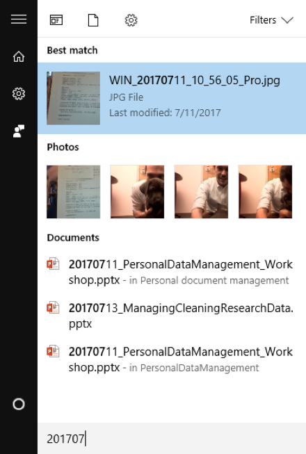
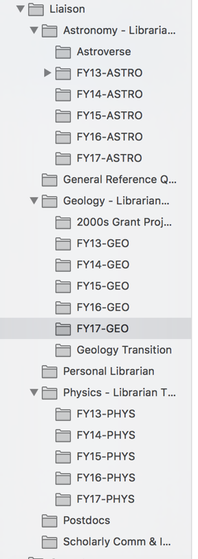
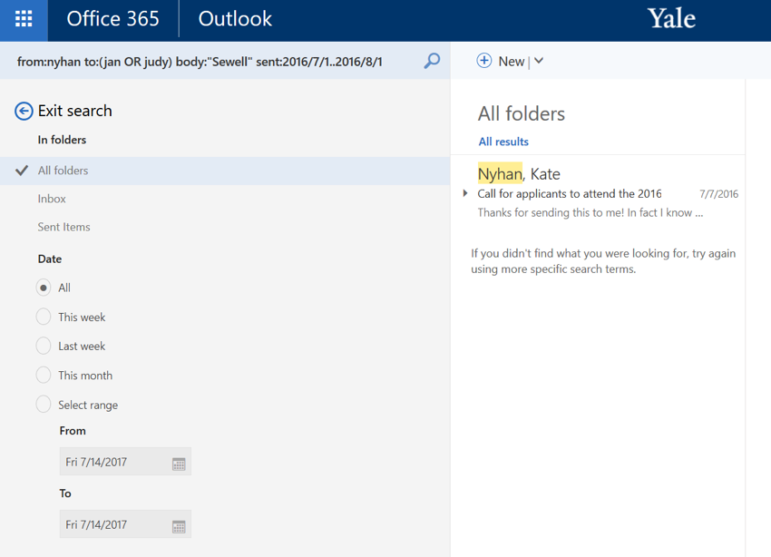
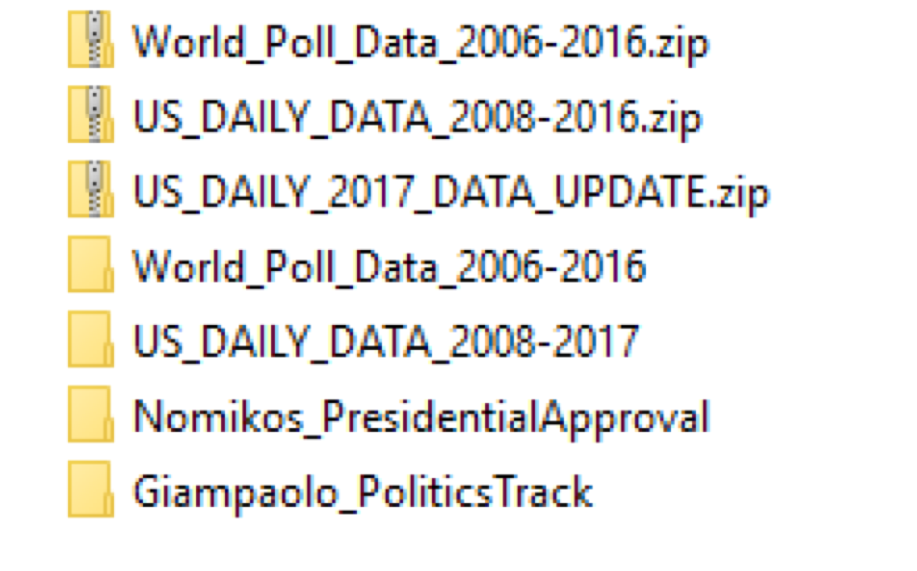
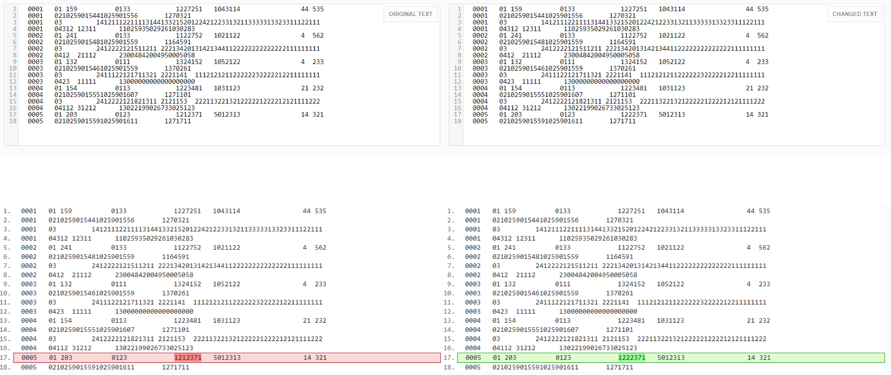
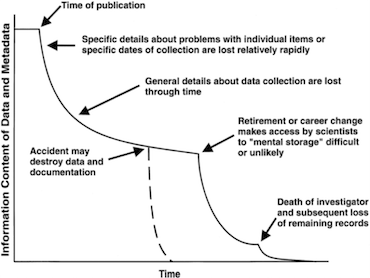
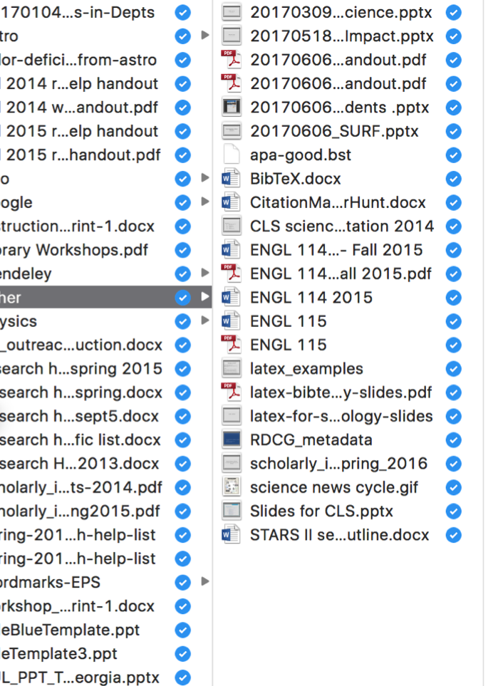

Where Did I Put That File?
Personal data management in professional contexts.

Munroe, R. (n.d.). "Old Files." XKCD. xkcd.com/1360
We teach research data management and see researchers benefit from thoughtful and mindful data management practices. Over the years, we've noticed ...
- Researchers manage spreadsheets, reports, and statistical data
- Librarians manage spreadsheets, reports, and statistical data
... and everyone can benefit from these strategies. We’ve also all made the same kinds of mistakes — and we all have things on our hard drives from years ago that we haven't organized. These workshop notes are about the future and what you can do for Future You.
Are you a searcher or a structurer?
Searchers re-find information using keywords and tags. Structurers re-find information by navigating hierarchical folder structures or representations of time. Most people are a bit of both! But most people also have a dominant one — Kate Nyhan is a searcher, and Kayleigh Bohémier is a structurer.
The two strategies are complementary, such as when you search in a specific Box folder, and both require forethought — adding tags if the relevant and sufficiently specific keywords aren’t already present in the document might take less time up front that you’d invest in setting up and maintaining a folder structure, but it still takes time.
In some cases, re-finding through searching can be faster than organizing, as detailed in this paper. But searching also runs the risk of not being able to find it again, so don’t depend on it 100%. Structuring folders can make handovers easier in cases of staff departure and retirement.
Naming folders and files
The final two tips above are important — especially if you want to program or make your files compatible with programming. Many file systems have trouble with special characters that mean something in terminal commands. Spaces in file names are also difficult when working in the command line.
Examples of naming conventions
When you use YYYYMMDDD_OtherConventions.ext for your filenames, it suddenly becomes much easier to manage your files. You don't have to worry about the date stamp disappearing, and you can remember chronologically when(ish) things happened — if you know you did a workshop in October 2016, you know that 201610 will begin the file name. This gives you powerful searching and sorting capabilities.
Here are some examples of file names that are easy:
- 20170604_CSSSI-librarians-mtng-minutes.doc
- 20170503_CSC-minutes.doc
- 20160729_Fall-Astr-Geo-Phys-Courses.xls
- 20161221_Physics-GOBI-analysis.xlsx
- 20160504_Librarians-meeting_EmilyHorningPresentation.pptx
- 20160504_Librarians-meeting_minutes.docx
How does this work in practice?
On a Mac, you can customize the keyboard shortcut for Spotlight in the Mac settings, but it should be in your top menu bar as a magnifying glass icon. A good keyboard shortcut is command-space because one rarely needs to use that combination otherwise.

In Windows, hit the windows icon key on your keyboard, then type in your search. With Cortana turned on, you can search across all files on OneDrive.

What about in email?
For Structurers, some of these tips may be helpful:
In practice, that looks like this:

For Searchers, some of these tips may be helpful:
In practice, that looks like this:

Version Control
Let’s start with a test: Can you tell which of these is the final version?
- EBSCO JR1 2014.xlsx
- EBSCO JR1 2014 cost per use added.xlsx
- EBSCO JR1 2014 for johndoe.xlsx
- EBSCO JR1 2014 FINAL FOR SENDING.xlsx
- EBSCO JR1 2014 corrected.xlsx
- EBSCO JR1 2014 corrected FINAL.xlsx
- EBSCO JR1 2014 for johndoe SEND THIS ONE.xlsx
- EBSCO JR1 2014 for johndoe FINAL CORRECTED.xlsx
How about these?
- outreach handout 2014-2015.pdf
- outreach handout FINAL 2014-15.pdf
- outreach handout yale fonts 2014.pdf
- outreach handout 2014 USE THIS ONE.pdf
- outreach handout GIVE TO EVERYONE.pdf
- outreach handout workshop list 2014 USE THIS ONE.pdf
- outreach handout workshop list 2014-2015 FINAL VERSION.pdf
Probably not. You can’t tell which of these is actually the final version without wasting time. From the file names, you also have no idea whether all of these xlsx files (or handouts) are actually the same file or different ones.
When doing version control, the following tips are a great starting place:
One great tip is to put the original information and data in a zip file, as shown in the image below. When something is kept in a zip file, it’s difficult to accidentally modify the files — you’d have to unzip first.
In the Cloud?
Most people use cloud services for some (or all) of their work — and it’s important to be aware of your versioning and document management context there. Whenever you use cloud services for versioning and document management, ask yourself a few questions:
- Is this personal or enterprise account?
- How long do they keep versions?
- Dropbox: 30 Days
- Box: 100 Versions (Enterprise)
- Google Drive: ??? (was 30 days)
- Is there is a data retention policy?
- How secure is the storage? How secure do you need it to be?
- Can you sync your files locally and is that important?
Diff Checking
If you run into a situation where you do need to tell quickly if two files are drastically different, DiffChecker is a great place to do that.

Some words of caution about versioning and the Cloud in your professional lives ...
We are all managing multiple aspects of our identities online. Keep in mind that when doing versioning and file management on your work computers, Yale policies on workstation use apply. Especially if you have a personal Google account that you have attached to your web browser, be aware that Google by default will sync all of your data across every device — you have to disable this manually in the browser settings. This includes bookmarks, web histories, cookies, and more — point being that this isn’t always data that you want on your work computer.
Documentation
Human memory is fallible. The image to the right is from the journal Ecological Applications, Volume 7:1, p. 330-342, “Nongeospatial Metadata for the Ecological Sciences.” It illustrates the fragility of information and what we know. This next section will walk through some helpful tips and pointers for understanding what you need to document.
Managing Collaboration
You can (and should) use these same strategies for collaborative work — and this can come up briefly in meetings. Not everyone is a Searcher or a Structurer, so this will be a dialogue process. Here are some starting places:
- Decide on a common storage location that everyone can access.
- Google Drive allows for live collaborative editing.
- Git/Github for collaborating on code (or any files).
- Decide on a common folder structure and naming convention ... and document it!
- Keep your local file up-to-date with the group files.
- If using a cloud service, sync your files.
Closing Thoughts
Is this overwhelming?
Don’t let the perfect be the enemy of the good.

You don’t have to do this retroactively — or for every project at once. Start now, be consistent, and doc on!